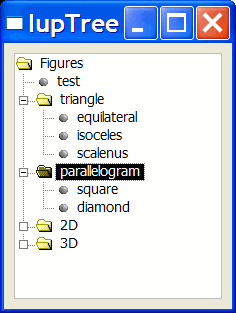

Creates a tree containing nodes of branches or leaves. Both branches and leaves can have an associated text and image. It inherits from IupCanvas.
This is an additional control that depends on the CD library. It is included in the Controls Library.
The branches can be expanded or collapsed. When a branch is expanded, its immediate children are visible, and when it is collapsed they are hidden.
The leaves can generate an executed or renamed action, branches can only generate renamed actions.
The selected node is the node with the focus rectangle, marked nodes have their background inverted.
Ihandle* IupTree(void); [in C]
iup.tree{} -> (elem: ihandle) [in Lua]
tree() [in LED]
This function returns the identifier of the created IupTree, or NULL if an error occurs.
SCROLLBAR
FONT
ADDEXPANDED
SHOWDRAGDROP
SHOWRENAME
RENAMECARET
RENAMESELECTION
CTRL
SHIFT
STARTING
VALUE
MARKED
IMAGELEAF
IMAGEBRANCHCOLLAPSED
IMAGEBRANCHEXPANDED
IMAGEid
IMAGEEXPANDEDid
NAME
STATE
DEPTH
KIND
PARENT
COLOR
ADDLEAF
ADDBRANCH
DELNODE
REDRAW
RENAMENODE
SELECTION_CB:
Action generated when an node is selected or
deselected.
MULTISELECTION_CB:
Action generated when multiple nodes are
selected with the mouse and the shift key pressed.
BRANCHOPEN_CB:
Action generated when a branch is expanded.
BRANCHCLOSE_CB:
Action generated when a branch is collapsed.
EXECUTELEAF_CB:
Action generated when a leaf is to be
executed.
RENAMENODE_CB:
Action generated when a node is to be
renamed.
RENAME_CB:
Action generated when a node new name was
entered.
SHOWRENAME_CB:
Action generated when a new name is about to
be entered.
DRAGDROP_CB:
Action generated when a drag & drop is
executed.
RIGHTCLICK_CB:
Action generated when the right mouse button
is pressed over a node.
Branches may be added in IupLua using a Lua Table (see Example 2).
Branches can contain other branches or leaves. The tree always has at least one branch, the root, which will be the parent of all the first level branches and leaves.
The IupTree is stored as a list, so that each node or branch has an associated identification number (id), starting by the root, with id=0. However, this number does not always correspond to the same node as the tree is modified. For example, a node with id 2 will always refer to the third node in the tree. For that reason, there is also userid, which allows identifying a specific node. The userid always refers to the same node (just as the associated text). The userid may contain a user-created structure allowing the identification of a node.
Each node also contains its depth level, starting by the root, which has depth 0. To allow inserting nodes in any position, sometimes the depth of a node must be explicitly changed. For instance, if you create a leaf in a child branch of the root, it will be created with depth 2. To make it become a child of the root, its depth must be set to 1.
IupTree has three types of images: one associated to the leaf, one to the collapsed branch and the other to the expanded branch. Each image can be changed, both globally and individually.
The predefined images used in IupTree can be obtained by means of function IupGetHandle.The names of the predefined images are: IMGLEAF, IMGCOLLAPSED, IMGEXPANDED, IMGBLANK (blank sheet of paper) and IMGPAPER (written sheet of paper). By default:
"IMAGELEAF" uses "IMGLEAF" "IMAGEBRANCHCOLLAPSED" uses "IMGCOLLAPSED" "IMAGEBRANCHEXPANDED" uses "IMGEXPANDED"
"IMGBLANK" and "IMGPAPER" are designed for use as "IMAGELEAF"
IupTree’s scrollbar is activated by default and works automatically. When a node leaves the visible area, the scrollbar automatically scrolls so as to make it visible. We recommend not changing the SCROLLBAR attribute.
The fonts used by IupTree are like the ones defined by IUP (see attribute FONT). We recommend using only IUP-defined fonts.
The IupTree colors are fixed by definition. The tree background color is "255 255 255" in Windows and "156 156 165" in Motif. The tree selected node color is "8 33 107" in Windows and "0 0 156" in Motif.
Node insertion or removal is done by means of attributes. It is allowed to remove nodes and branches inside callbacks associated to opening or closing branches.
This means that the user may insert nodes and branches only when necessary when the parent brach is opened, allowing the use of a larger IupTree without too much overhead. Then when the parent branch is closed the subtree can be removed. A side-effect of this use is that the expanded or collapsed state of the children branches must be managed by the user.
When a node is added, removed or renamed the tree is not automatically redrawn. You must set REDRAW=YES when you finish changing the tree.
Is the IupTree’s default operation mode. In this mode only one node is marked, and it matches the selected node.
IupTree allows marking several nodes simultaneously using the Shift and Control keys. To use multiple marking, the user must use attributes SHIFT and CTRL.
When a user keeps the Control key pressed, the individual marking mode is used. This way, the selected node can be modified without changing the marked node. To reverse a node marking, the user simply has to press the space bar.
When the user keeps the Shift key pressed, the block marking mode is used. This way, all nodes between the selected node and the initial node are marked, and all others are unmarked. The initial node is changed every time a node is marked without the Shift key being pressed. This happens when any movement is done without Shift or Control being pressed, or when the space bar is pressed together with Control.
You can simply implement a K_ANY callback:
int k_any(Ihandle* self, int c)
{
if (c == K_DEL)
{
IupSetAttribute(self,"DELNODE","MARKED");
IupSetAttribute(self,"REDRAW","");
}
return IUP_DEFAULT;
}
Using the keyboard:
Using the mouse:
IupTree has functions that allow associating a pointer (or a user defined id) to a node. In order to do that, you provide the id of the node and the pointer (userid); even if the node's id changes later on, the userid will still be associated with the given node. In IupLua, instead of a pointer the same functions are defined for table and userdata.
int IupTreeSetUserId(Ihandle *self, int id, void *userid); [in C] iup.TreeSetUserId(self: ihandle, id: number, userid: userdata) [in Lua] iup.TreeSetTableId(self: ihandle, id: number, table: table) [in Lua]
self:
Identifier of the IupTree interacting with the user.
id:
Node identifier.
userid:
User pointer associated to the node.
Use NULL (nil) value to remove the association.
table:
Table that should be associated to the node or leaf. Use nil
value to remove the association.
Associations to Lua objects in Lua 5 are referenced in the Lua REGISTRY. So they can be retrieved later. This means also that the associated object will not be garbage collected until its reference is removed.
Also, the user should not use the same table to reference different nodes (neither in the same nor across different trees.)
void* IupTreeGetUserId(Ihandle *self, int id); [in C] iup.TreeGetUserId(self: ihandle, id: number) -> (ret: userdata) [in Lua] iup.TreeGetTable(self: ihandle, id: number) -> (ret: table) [in Lua]
self:
Identifier of the IupTree interacting with the user.
id:
Node identifier.
Returns the pointer or table associated to the node.
int IupTreeGetId(Ihandle *self, void *userid); [in C] iup.TreeGetId(self: ihandle, userid: userdata) -> (ret: number) [in Lua] iup.TreeGetTableId(self: ihandle, table: table) -> (ret: number) [in Lua]
self:
Identifier of the IupTree interacting with the user.
userid:
Pointer associated to the node.
table:
Table that should be associated to the node or leaf.
Returns the id of the node on success and -1 (nil) on failure.
iup.TreeSetValue(self: ihandle, tree: table) [in Lua]
self:
Identifier of the IupTree interacting with the user.
tree: table of nodes.
Initializes the tree using the given Lua table as values for the tree nodes. For example:
tree = {
{
"Horse",
"Whale";
branchname = "Mammals"
},
{
"Shrimp",
"Lobster";
branchname = "Crustaceans"
};
branchname = "Animals"
}
iup.TreeSetValue(handle, tree)
These functions can be used to help set and get attributes from the matrix:
void IupTreeSetAttribute (Ihandle *n, char* a, int id, char* v); void IupTreeStoreAttribute(Ihandle *n, char* a, int id, char* v); char* IupTreeGetAttribute (Ihandle *n, char* a, int id); int IupTreeGetInt (Ihandle *n, char* a, int id); float IupTreeGetFloat (Ihandle *n, char* a, int id); void IupTreeSetfAttribute (Ihandle *n, char* a, int id, char* f, ...);
They work just like the respective tradicional set and get functions. But the attribute string is complemented with the L and C values. For ex:
IupTreeSetAttribute(n, "KIND" , 30, v) = IupSetAttribute(n, "KIND30", v) IupTreeSetAttribute(n, "ADDLEAF" , 10, v) = IupSetAttribute(n, "ADDLEAF10", v)
See also the IupTreeUtil by Sergio Maffra and Frederico Abraham. It is an utility wrapper in C++ for the IupTree.
Creates a IupTree with the values shown on the images below, and allows the user to change them dynamically.
